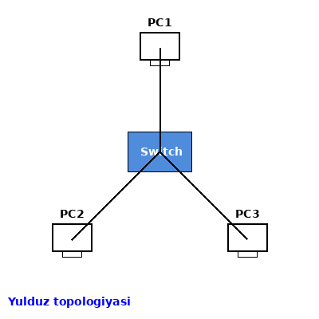
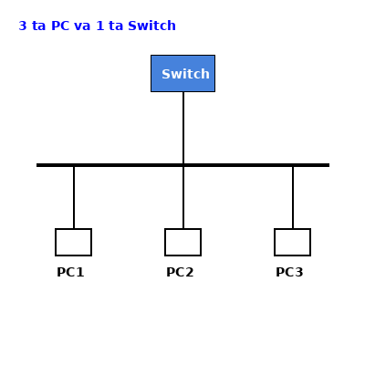
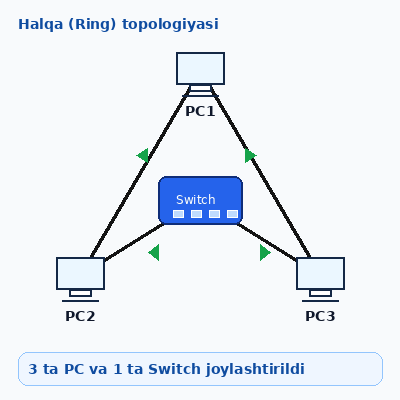
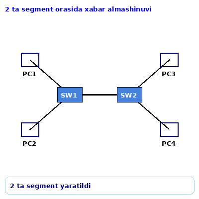
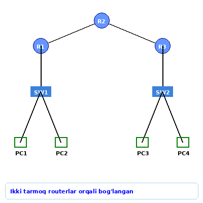
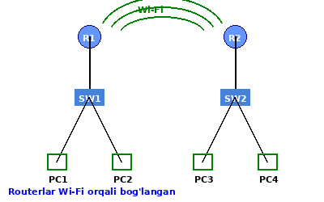
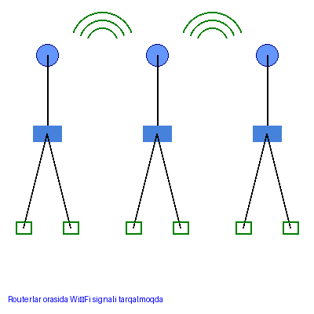

Telekommunikatsiya
Qayta topshirish uchun topshiriqlar
Topshiriqlardan birini tanlang va amaliy bajaring.
Qoniqali baho olish uchun topshiriqlar

1-amaliy topshiriq
Topshiriq matni: Cisco Packet Tracer dasturida 3 ta kompyuter va 1 ta switch orqali yulduz topologiyasi asosida tarmoq yaratilsin hamda kompyuterlar o‘rtasida xabar almashinishni namoyish etilsin.1. Ish maydoniga 3 ta PC va 1 ta Switch joylashtirilsin
2. Switch markazda, kompyuterlar uning atrofida joylashtirilsin
3. PC1, PC2 va PC3 bir xil tarmoq segmentiga moslab sozlansin
3. PC1, PC2 va PC3 bir xil tarmoq segmentiga moslab sozlansin
4. Xabar almashishni namoyish etilsin. Simulation rejimida PC lar o‘rtasidagi
xabar harakati ko‘rsatilsin.

2-amaliy topshiriq
Topshiriq matni: Cisco Packet Tracer dasturida 3 ta kompyuter va 1 ta switch orqali shina topologiyasi asosida tarmoq yaratilsin hamda kompyuterlar o‘rtasida xabar almashinishni namoyish etilsin.1. Ish maydoniga 3 ta PC va 1 ta Switch joylashtirilsin
2. Switch markazda, kompyuterlar uning atrofida joylashadi joylashtirilsin
3. PC1, PC2 va PC3 bir xil tarmoq segmentiga moslab sozlansin
3. PC1, PC2 va PC3 bir xil tarmoq segmentiga moslab sozlansin
4. Xabar almashishni namoyish etilsin. Simulation rejimida PC lar o‘rtasidagi
xabar harakati ko‘rsatiladi.

3-amaliy topshiriq
Topshiriq matni: Cisco Packet Tracer dasturida 3 ta kompyuter va 1 ta switch orqali xalqa topologiyasi asosida tarmoq yaratilsin hamda kompyuterlar o‘rtasida xabar almashinishni namoyish etilsin.1. Ish maydoniga 3 ta PC va 1 ta Switch joylashtirilsin
2. Switch markazda, kompyuterlar uning atrofida joylashadi joylashtirilsin
3. PC1, PC2 va PC3 bir xil tarmoq segmentiga moslab sozlansin
3. PC1, PC2 va PC3 bir xil tarmoq segmentiga moslab sozlansin
4. Xabar almashishni namoyish etilsin. Simulation rejimida PC lar o‘rtasidagi
xabar harakati ko‘rsatiladi.
Savollar
1. Yulduz, Shina, Xalqa topologiyasining asosiy afzalliklari nimalardan iborat?
2. Yulduz, Shina, Xalqa topologiyasining asosiy kamchiliklari nimalardan iborat?
3. Tarmoqdagi qurilmalar soni ortganda shina topologiyasining ishlashiga qanday ta'sir qiladi?
4. Shina topologiyasi va yulduz topologiyasi o‘rtasidagi asosiy farq nimada?
5. Agar bitta kompyuter ishlamay qolsa, boshqa kompyuterlarga qanday ta'sir qiladi?
6. PC1 dan PC2 ga xabar yuborib natijani ko‘rsating.
7. PC2 dan PC3 ga xabar yuborib natijani ko‘rsating.
8. PC3 dan PC1 ga xabar yuborib natijani ko‘rsating.
9. Bitta PC IP manzilini noto‘g‘ri sozlab, qanday xatolik yuz berishini izohlang.
10. 20 ta kompyuterdan iborat tarmoqli kichik ofis uchun qaysi topologiyadan foydalanish ma'qul?
11. Switch qanday vazifani bajaradi?
12. Switch ishlamay qolsa, tarmoqda qanday holat yuz beradi?
13. IP manzil nima uchun kerak?
14. Kompyuterlar o‘zaro xabar almashishi uchun qanday shartlar bajarilishi kerak?
15. Simulation rejimida paket harakatini tushuntirib bering.
Yaxshi baho olish uchun topshiriqlar

4-amaliy topshiriq
Topshiriq matni: Cisco Packet Tracer dasturida har biri 2 ta tarmoq qurilmasi va 1 ta switchni olgan 2 ta segmentni bir-biriga ulab qurilmalar o‘rtasida xabar almashinishni namoyish etilsin.1. 1-segment: PC1, PC2 va SW1
2. 2-segment: PC3, PC4 va SW2
3. Segmentlar o‘zaro bog‘lansin
3. PC1, PC2 va PC3 bir xil tarmoq segmentiga moslab sozlansin
4. PC1 → PC3 va PC4 → PC2 xabar almashinuvi ko‘rsatilsin.
5. Segmentlar o‘rtasidagi aloqa muvaffaqiyatli ekanligi namoyish etilsin.

5-amaliy topshiriq
Topshiriq matni: Cisco Packet dasturining CLI rejimi orqali dinamik marshrutlashni amalga oshirilsin.1. 2 ta lokal tarmoq qurilsin
2. 2 ta switch ulansin
3. 3 ta router orqali bog‘lansin
3. PC1, PC2 va PC3 bir xil tarmoq segmentiga moslab sozlansin
4. PC1 → PC4 va PC3 → PC2 o‘rtasida xabar almashinuvi ko‘rsatilsin.
Savollar
1. Ikki segmentni o‘zaro bog‘lashning maqsadi nima?
2. Bir segmentdagi qurilma ikkinchi segmentdagi qurilmaga qanday tartibda xabar yuboradi?
3. Agar qurilmalardan biriga noto‘g‘ri IP manzil berilsa, qanday muammo yuzaga keladi?
4. Ikki segmentli tarmoqning bitta segmentli tarmoqqa nisbatan qanday afzalliklari mavjud?
5. Ushbu tarmoq sxemasini 6 ta kompyutergacha kengaytirish uchun qanday o‘zgartirishlar kiritish kerak?
A'lo baho olish uchun topshiriqlar

6-amaliy topshiriq
Topshiriq matni: Cisco Packet Tracer dasturida har biri 2 ta tarmoq segmentini bir-biri bilan simsiz (Wi-fi orqali) ulab qurilmalar o‘rtasida xabar almashinishni namoyish etilsin.1. 1-segment va 2-segment alohida ko‘rsatilsin
2. Segmentlar Wi-Fi orqali bog‘lansin
3. PC1 → PC3 va PC4 → PC2 o‘rtasida xabar almashinuvi namoyish etilsin

7-amaliy topshiriq
Topshiriq matni: Cisco Packet Tracer dasturida har biri 3 ta tarmoq segmentini bir-biri bilan simsiz (Wi-fi orqali) ulab qurilmalar o‘rtasida xabar almashinishni namoyish etilsin.1. 1-segment,2-segment va 3-segment alohida ko‘rsatilsin
2. Segmentlar Wi-Fi orqali bog‘lansin
3. PC1 → PC3 va PC4 → PC2 o‘rtasida xabar almashinuvi namoyish etilsin
4. PC1 → PC5 va PC6 → PC2 o‘rtasida xabar almashinuvi namoyish etilsin
5. PC3 → PC5 va PC6 → PC4 o‘rtasida xabar almashinuvi namoyish etilsin
Savollar
1. Simsiz tarmoqning simli tarmoqqa nisbatan qanday afzalliklari mavjud?
2. Access Point (AP) qurilmasi tarmoqda qanday vazifani bajaradi?
3. Wi-Fi tarmog‘ida SSID nima?
4. Simsiz tarmoq xavfsizligini ta'minlash uchun qanday usullardan foydalaniladi?
5. Simsiz tarmoqda ma'lumot uzatish tezligiga qanday omillar ta'sir qiladi?